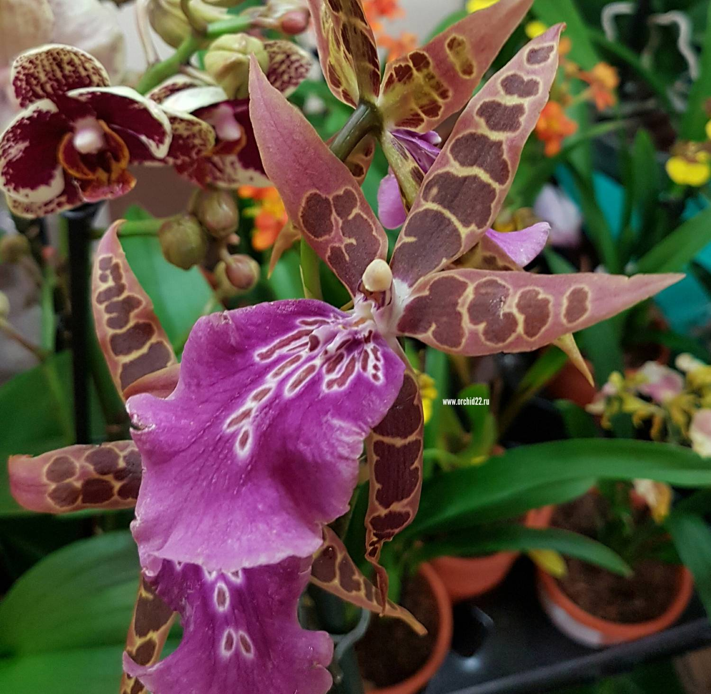

Барисиа
Брасиа (Brassia) е род орхидеи с уникални цветя, които наподобяват паяци благодарение на дългите венчелистчета. Родът включва около 30 вида, разпространени в Централна и Южна Америка.
Основни характеристики:- Цветя: Големи, с дълги венчелистчета, в жълто, зелено или кафяво, често с петна.
- Листата: Дълги, тъмнозелени.
- Растеж: Въздушни, без нужда от почва.
- Светлина: Ярка, но индиректна светлина.
- Температура: 18-25°C през деня, 15-18°C през нощта.
- Поливане: Редовно, но не с прекалено много вода.
- Влажност: Висока (60-80%).
- Субстрат: Смес за орхидеи с добър дренаж.
Торене на всеки 2-3 седмици през пролетта и лятото.
Брасиите изискват внимателни грижи, но са впечатляващи с екзотичния си външен вид и ароматни цветове.
